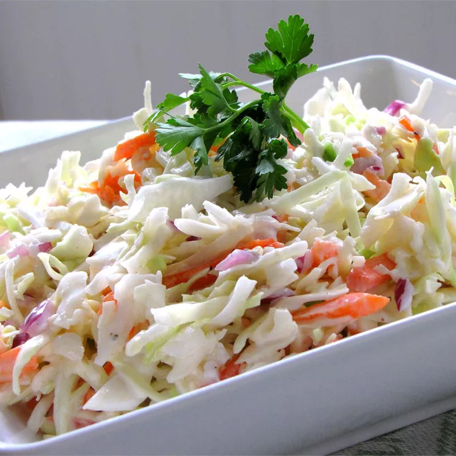

Coleslaw

Description
This creamy and tangy coleslaw is the perfect side dish for any barbecue or potluck. Made with a simple blend of mayonnaise, sugar, milk, buttermilk, lemon juice, white wine vinegar, salt, and pepper, this recipe is easy to put together and can be customized to your taste. Toss in a package of coleslaw mix and some minced onion for a refreshing and delicious salad that everyone will love.
Ingredients
- ½ cup mayonnaise
- ⅓ cup white sugar
- ¼ cup milk
- ¼ cup buttermilk
- 2 ½ tablespoons lemon juice
- 1 ½ tablespoons white wine vinegar
- ½ teaspoon salt
- ⅛ teaspoon ground black pepper
- 1 (16 ounce) package coleslaw mix
- 2 tablespoons minced onion
Steps
- Stir mayonnaise, sugar, milk, buttermilk, lemon juice, vinegar, salt, and pepper together in a bowl until smooth.
- Combine coleslaw mix and onion in a large bowl. Pour mayonnaise mixture over top and stir until well combined. Chill for 1 hour before serving.